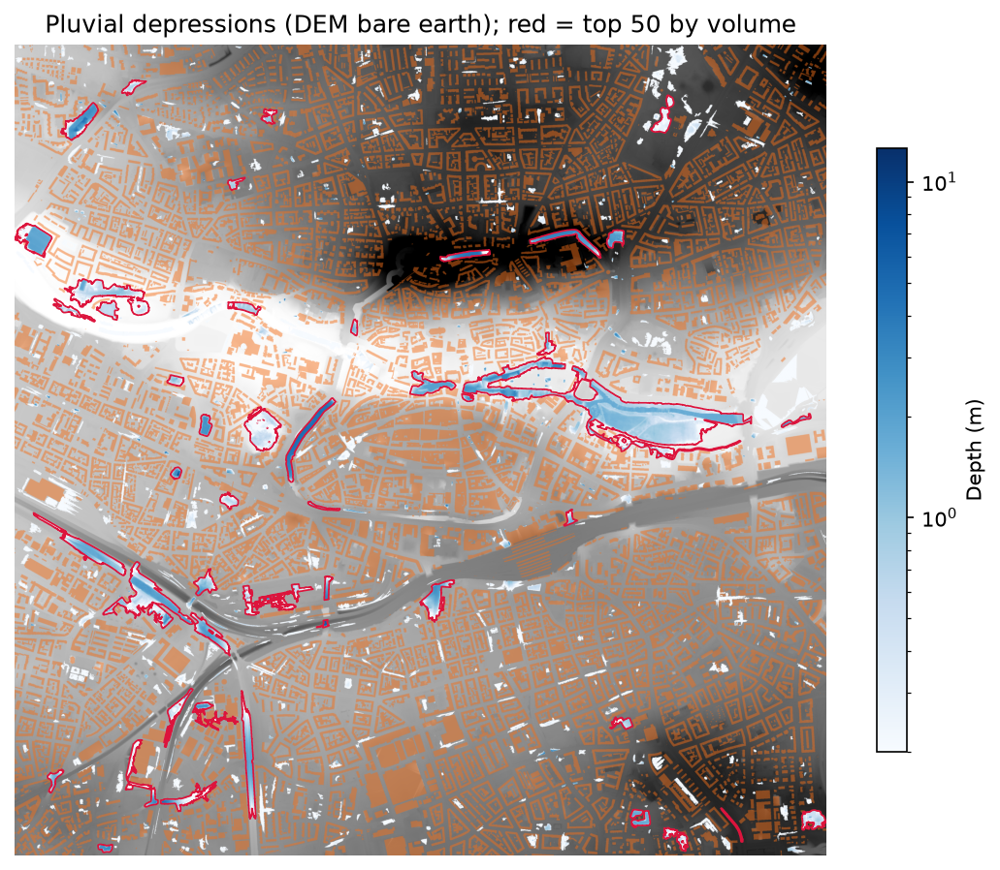
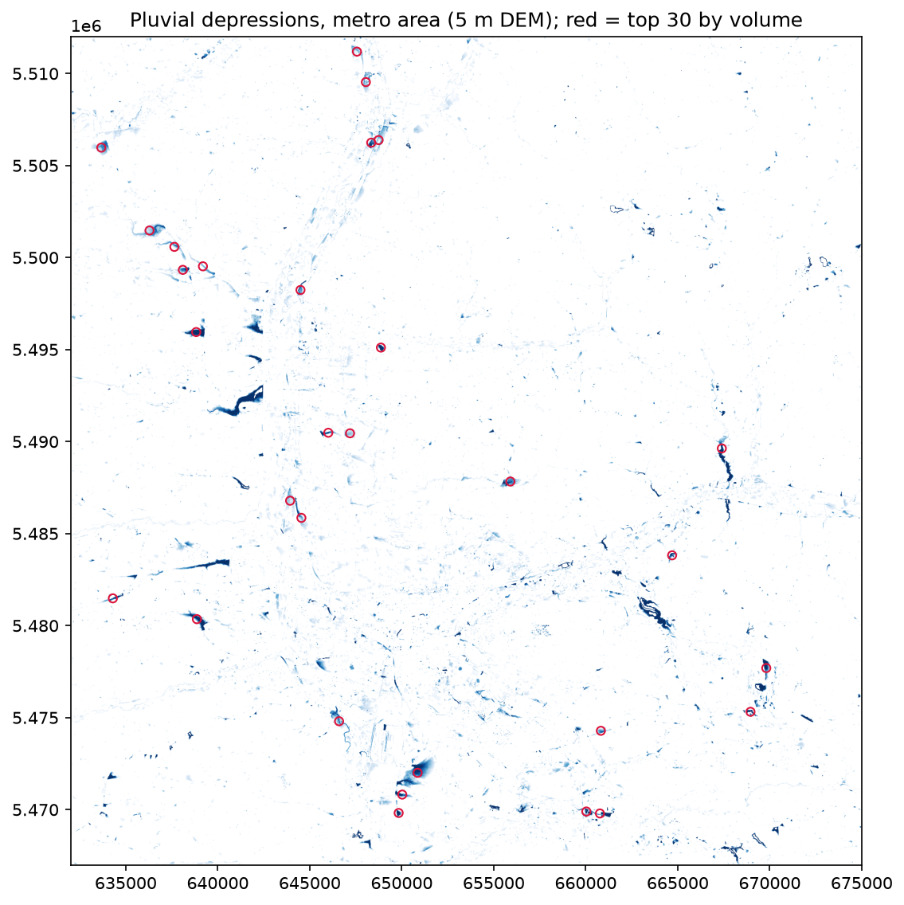
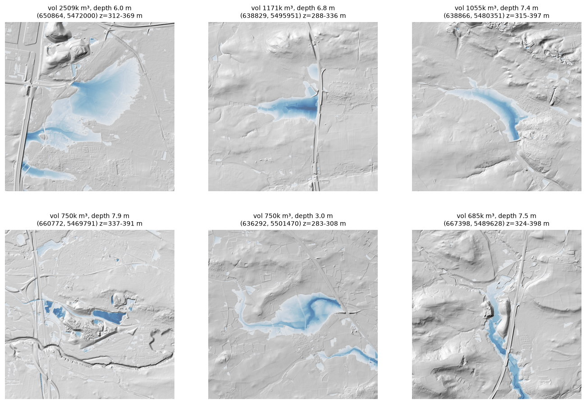

Pluvial flooding: where does heavy rain collect?
A terrain-based screening for Nürnberg–Fürth–Erlangen
- About 27,900 terrain depressions (≥ 0.20 m deep) were found in a 43 × 45 km area, covering 62 km² with a modelled volume of 37 million m³.
- The largest depressions are mostly artefacts, not flood spots. The six largest (0.7 to 2.5 million m³, 3 to 8 m deep) were inspected on a hillshade: most are valleys closed by road or railway embankments, which a bare-earth DEM treats as dams, and one matches a quarry. Because they dominate the total, the 37 million m³ is an upper bound, not a storage estimate.
- Obvious filters did not fix this. Masking water (OpenStreetMap) and lakes or bare ground (WorldCover) removed only 139 depressions. Ranking by fill ratio or by catchment area did not work either (see Results).
- Method and code:
src/pluvial.py
Problem
Heavy rain can flood streets and basements far from any river, wherever surface runoff collects in a topographic low (pluvial flooding). A municipality needs a first, cheap answer to: where are the terrain depressions in which runoff accumulates, and which of them matter for people and buildings? This case study is a screening on elevation data, not a flood forecast.
Data
| Dataset | Use |
|---|---|
| Laser-scanning bare-earth DEM (Bavarian DGM1 tiles): 1 m for a pilot, 5 m for the metropolitan area (43 × 45 km) | Terrain |
| OpenStreetMap via the Overpass API | Building footprints and permanent water |
| ESA WorldCover 2021 (v200), 10 m | Water and bare-ground classes, to check the largest depressions |
Method and scientific rationale
- Depression filling. The DEM is filled with a priority-flood-type algorithm, implemented as morphological reconstruction (Vincent 1993; equivalent in result to Wang & Liu 2006). Filled minus original gives each depression’s depth, area and volume, that is, the water it can hold before spilling.
- Minimum depth of 0.20 m. Shallower sinks are mostly vertical noise in the DEM, not real storage.
- Buildings: used for routing, not for depth. Runoff cannot cross buildings, so OSM building footprints were raised by 10 m in a copy of the DEM, used only for the flow routing (D8 flow accumulation, O’Callaghan & Mark 1984). My first attempt also computed depth on the raised DEM; it produced 10 to 12 m deep “wells” in courtyards, an artefact of the added height. Depths are therefore computed on the original DEM. Depressions with more than 20 % of their area under buildings are discarded as DEM or footprint inconsistencies.
- Water and excavations. Depressions with more than 20 % OSM water are discarded because rivers and lakes are not pluvial hazards. As a second check, depressions with more than 30 % WorldCover water or more than 50 % bare ground were also removed.
- Depth ceiling (metropolitan area). The raw result contained excavations such as quarries 29 and 74 m deep. Depressions deeper than 8 m (56 in total) were discarded.
- Ranking. Two further quantities were computed: the upstream catchment (maximum flow accumulation inside each depression) and the fill ratio (catchment ÷ volume), meant to flag a lot of runoff for little storage. Both turned out unusable as a ranking (see Results), so depressions are ordered by volume.
- Visual validation. The largest depressions were inspected on a hillshade rather than trusting the numbers.
Results
Pilot: Nürnberg–Fürth urban core (1 m, 4 × 4 km)

The 1 m pilot covers a 4 × 4 km window in the centre of the pilot area, because the full 11 × 11 km grid (128 million cells) was too heavy for the flow-routing library. After the size filters (≥ 50 m³ or ≥ 100 m²) and the building filter, 818 depressions remain. They sit in parks, road and railway cuttings and along the river, which is plausible. The largest holds about 158,000 m³ (3.4 m deep, 0.66 km² catchment) and looks like a real basin. The deepest (12.6 m) is a trench or quarry-like feature that could be a real underpass or a DEM artefact; this was not resolved. The river channel also appears as a depression, because the pilot did not mask water.
Metropolitan area (5 m)

- 27,932 depressions remain, with a modelled volume of 37.2 million m³ over 62.2 km². Half are shallower than 0.40 m; 4,313 are at least 1 m deep.
- OSM building and water masks cover 3.5 % and 1.3 % of the area.
- The WorldCover check removed only 139 depressions and did not touch the top of the ranking: the ten largest have 0 to 12 % water and 0 to 18 % bare ground. My first hypothesis, that they were unmapped gravel pits or fish ponds, was wrong.
- Ranking by catchment fails: it returns depressions of 100 to 1,800 m² with a catchment of about 155 km², which is the Pegnitz/Regnitz main channel collecting everything upstream, not a place where water ponds. Ranking by fill ratio fails in the pilot: the top places are 1 m³ depressions lying on large flow paths.
What the largest depressions really are

From the hillshade alone (no orthophoto), the six largest are:
- A wide basin at a motorway junction with a quarry or fill to the north; partly real, but closed by infrastructure.
- A valley closed by a road or motorway embankment: a clear case of a “dam” (the model raises water 6.8 m behind it).
- An enclosed valley behind an embankment or built-up area; the mechanism is plausible but less clear.
- A shape that matches a quarry or industrial compound rather than a valley.
- A valley closed by a linear route on one side; probably an embankment.
- A swale crossed by a motorway; possibly closed by an embankment or bridge.
Culverts, bridges and underpasses are not in a bare-earth DEM, so water “fills a reservoir” behind the embankment that in reality drains. These depths of 6 to 8 m are an artefact of the method, not real ponding.
Recommendation for the municipality
- Do not use the largest depressions as hazard areas. At this stage the map is useful for the shallow, local depressions (the pilot shows them in cuttings, underpasses and parks), not for valley-scale ones.
- Breach embankments before ranking. Lower the DEM in a narrow corridor where OSM roads and railways cross a stream, then repeat the depression analysis. This is the next step and was tested neither in the pilot nor at metropolitan scale.
- Define a ranking that is not dominated by the main stream or by volume, for example using local catchments that exclude the Pegnitz/Regnitz channel.
- Verify any shortlist with a 2D rainfall–runoff simulation and records of past flooding before investment or planning decisions.
Limitations
- A topographic screening, not a flood model. Rainfall, infiltration, sealing, sewer capacity and flow dynamics are not modelled.
- Embankments and culverts are not corrected. This is a known issue with LiDAR DEMs (Lindsay & Dhun 2015) and dominates the largest results here.
- The top-six inspection is visual, on a hillshade without orthophoto, so the causes are probable, not confirmed.
- Resolution and extent. The 5 m DEM misses narrow features. The 1 m pilot resolves them but covers only 4 × 4 km, and does not mask water.
- Thresholds are judgement calls (0.20 m, 20 % buildings and water, 30 % WorldCover water, 50 % bare ground, 8 m depth ceiling, minimum size in the pilot). They were set by inspection and not tuned against observed flooding.
- OSM completeness. Buildings were rasterised from simple closed ways only; multipolygon buildings are missed. Overpass queries were run in 9 tiles with retries.
- No validation against flood records has been done.
References
- Lindsay, J. B. & Dhun, K. (2015). Modelling surface drainage patterns in altered landscapes using LiDAR. International Journal of Geographical Information Science, 29(3), 397–411. doi:10.1080/13658816.2014.975715
- O’Callaghan, J. F. & Mark, D. M. (1984). The extraction of drainage networks from digital elevation data. Computer Vision, Graphics, and Image Processing, 28(3), 323–344. doi:10.1016/S0734-189X(84)80011-0
- Vincent, L. (1993). Morphological grayscale reconstruction in image analysis: applications and efficient algorithms. IEEE Transactions on Image Processing, 2(2), 176–201. doi:10.1109/83.217222
- Wang, L. & Liu, H. (2006). An efficient method for identifying and filling surface depressions in digital elevation models for hydrologic analysis and modelling. International Journal of Geographical Information Science, 20(2), 193–213. doi:10.1080/13658810500433453
- Zanaga, D. et al. (2022). ESA WorldCover 10 m 2021 v200 [dataset]. doi:10.5281/zenodo.7254221
Kurzfassung (Deutsch)
Mit Laserscanning-Geländemodellen (1 m im Pilotgebiet, 5 m für die Metropolregion) wurden Senken identifiziert, in denen sich Starkregenabfluss sammeln kann: rund 27 900 Senken (≥ 0,20 m tief) in einem Gebiet von 43 × 45 km. Gebäude wurden nur für die Abflussrouting um 10 m angehoben, Tiefen wurden am Original-Geländemodell berechnet; Gewässer, Abbauflächen und Senken tiefer als 8 m wurden ausgeschlossen. Die größten Senken sind überwiegend Artefakte: Straßen- und Bahndämme wirken im Geländemodell wie Staumauern, weil Durchlässe fehlen. Das Gesamtvolumen (37 Mio. m³) ist daher eine Obergrenze. Nächster Schritt: Dämme an Kreuzungen mit Gewässern durchstechen und das Ranking neu berechnen.